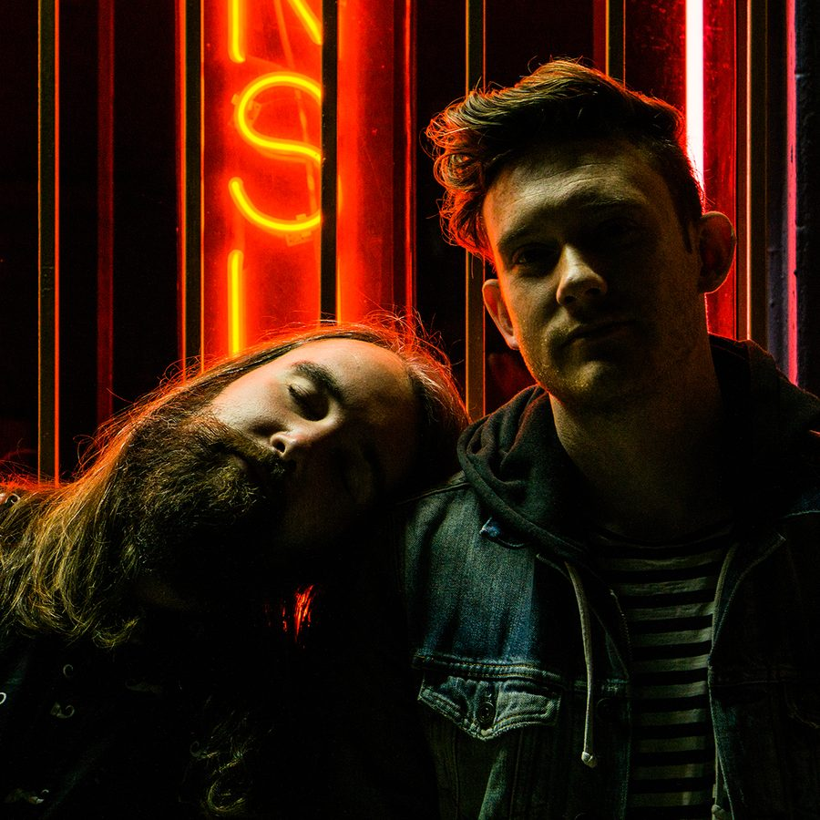

Botnek Confirm They “Can’t Remember” With a Devastating Tech House Weapon


Canadian duo Botnek recently demonstrated they’re just as good at churning out tech house stompers as they are with big-room weapons for stables like Monstercat. This trend is set to continue with the release of their two-track Can’t Remember EP on Audiophile XXL next week. In fact, its lead track is so big and heavy, we just had to preview it as our Track of the Day.
“We’ve known Audiophile XXL for a WHILE now, because of their consistently amazing releases by the who’s-who of the tech house world,” Botnek told Insomniac. “Our Can’t Remember EP is an exploration into the wonky/bassline/tech house world and is definitely something different for us. Everyone at Audiophile has been so supportive of our foray into this world; we couldn’t have asked for a better group of folks to release with.”
The first minute or so is relatively unassuming, teasing snippets of a vocal sample that says, “I can’t remember what I did last night.” But this is just the calm before the storm. After an early buildup as the sample rolls out in full, the powered-up drop unleashes a bassline that’s an absolutely earth-shaking monster. Botnek certainly know how to produce dancefloor weapons of the highest grade.
Available December 7 via Audiophile.
Buy Botnek’s Can’t Remember EP here.
Follow Botnek on Facebook | Twitter | SoundCloud
Follow Audiophile on Facebook on Facebook | Twitter | SoundCloud